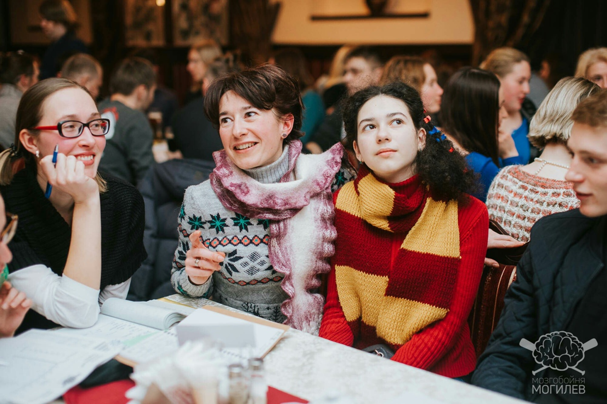
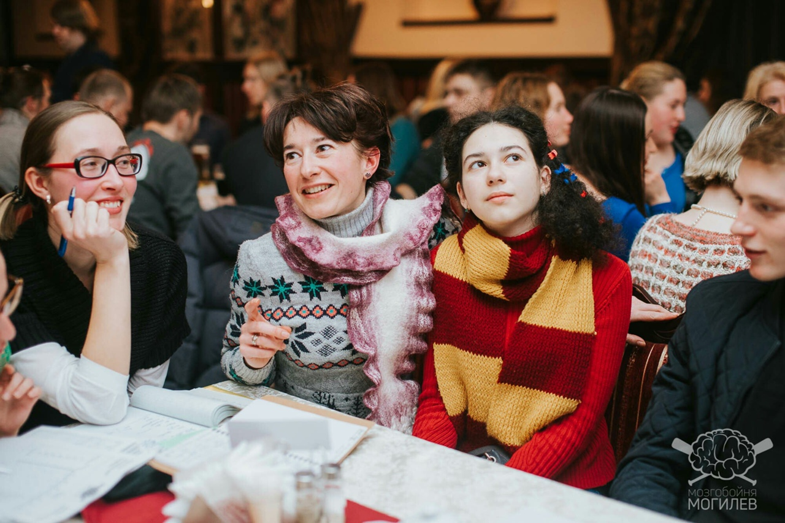
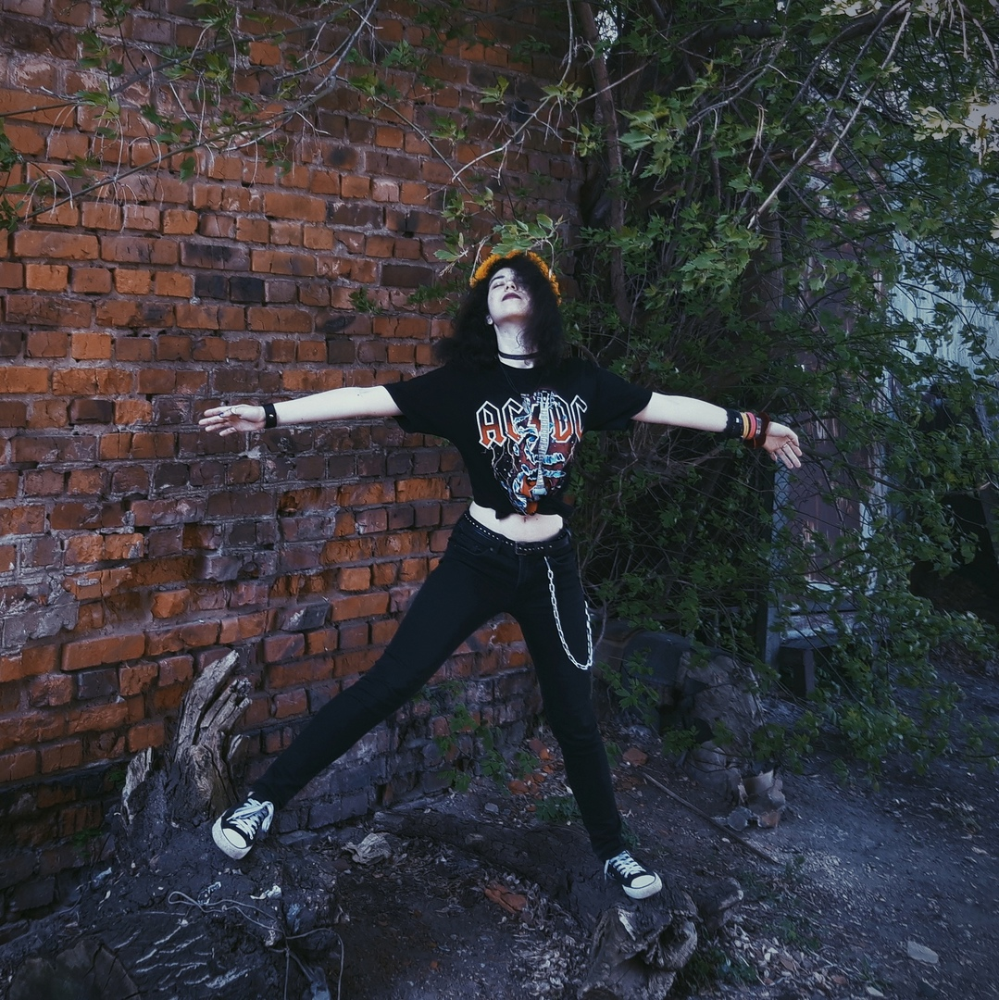
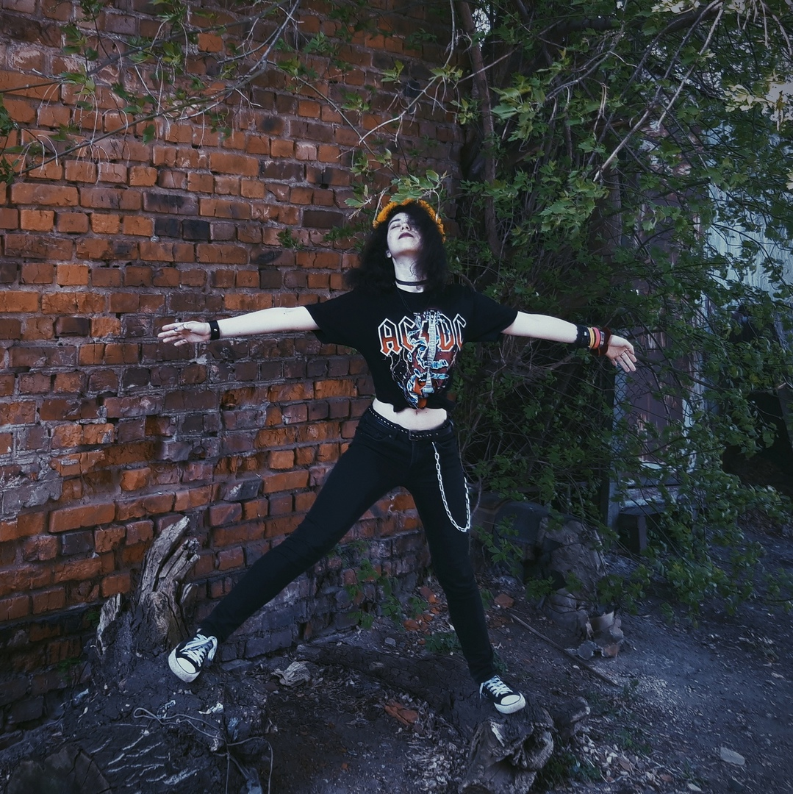
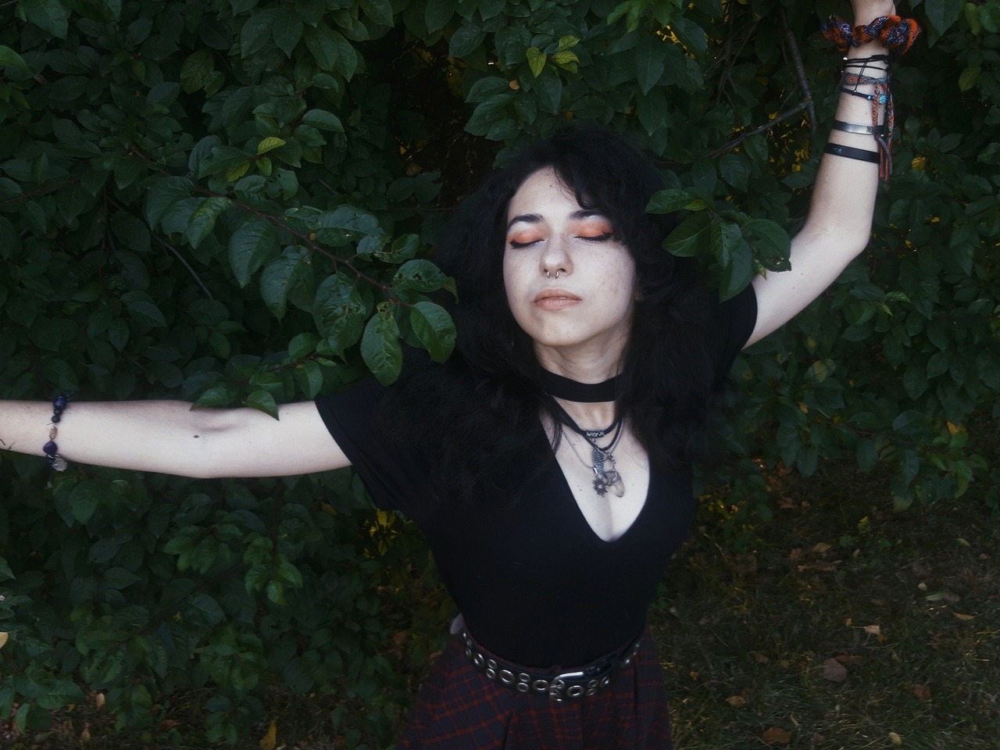
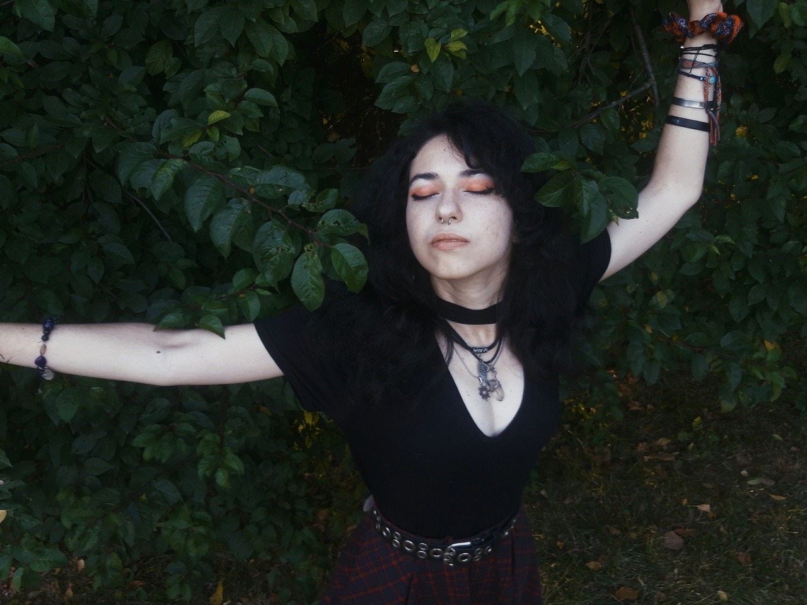

Some Info
С самого начала года Карина (простите) сказала, что ей больше нравится, когда ее зовут Рина, и мне тоже это нравится! Поэтому дальше Рину будут звать только Риной!
Помню как мы с Риной познакомились в общаге в первый день и заоговорили про Ведьмака. А если человек значет про ведьмака, значит он просто замечательный. Кстати Рина прям настоящий фанат этой вселенной, похлеще меня, потому что помнит всякие нюансы, про которые я уже забыть забыла. Поклоняюсь людям с хорошей памятью.
Самой Рине очень-очень подходит образ классической Йеннифер из книг, но здесь будет из игры.
В прошлом году я очень хотела попросить Рину погадать мне на картах Таро, но, к сожалению, что-то так и не пришла, о чем сейчас очень жалею.
Еще Рина умеет красиво рисовать и играть на гитаре, что я очень люблю! А любимые цвета Рины - красный и черный, и интересно, что ее комп выбирался именно по критерию цвета. Да и вообще, такие цвета очень идут Рине к лицу!
Теперь немного фоточек Рины
 

 

 
